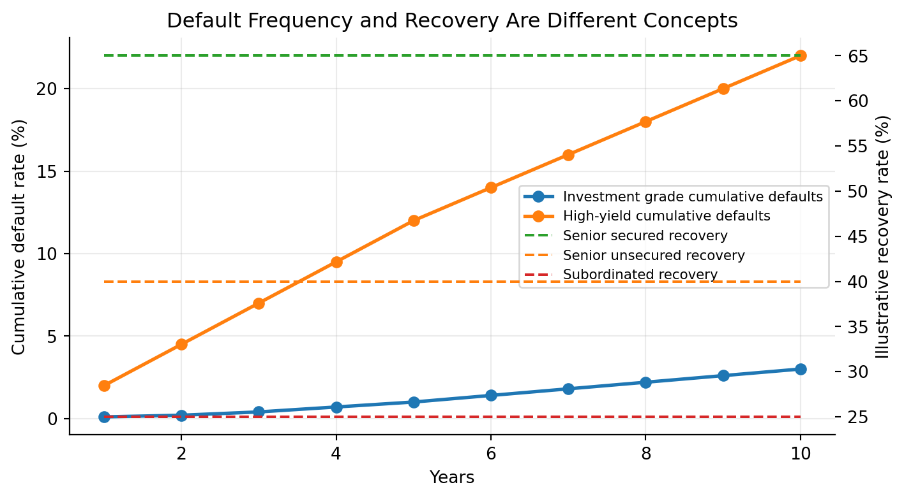

flowchart LR A["U.S. Treasury securities<br/>base interest-rate curve"] --> B["Agency debt<br/>Treasury + agency/liquidity spread"] A --> C["Investment-grade corporates<br/>Treasury + credit/liquidity spread"] A --> D["High-yield bonds and loans<br/>Treasury or SOFR + larger credit spread"] A --> E["TIPS<br/>real yield + inflation adjustment"] A --> F["STRIPS<br/>zero-coupon Treasury cash flows"]
Lecture 5: Treasury and Corporate Debt Markets
Learning Objectives
At the end of this lecture you should be able to:
- Explain why U.S. Treasury securities serve as benchmark rates for the broader fixed-income market.
- Distinguish among Treasury bills, notes, bonds, floating-rate notes, TIPS, and STRIPS based on cash-flow structure, maturity, quoting convention, and risk exposure.
- Compute Treasury bill prices, bank discount yields, bond-equivalent yields, Treasury coupon-security prices, and accrued interest.
- Describe the Treasury auction process, including competitive bids, noncompetitive bids, stop-out yields, single-price auctions, reopenings, and when-issued trading.
- Explain how on-the-run and off-the-run Treasuries support benchmark curve construction and connect to the spot-rate and spread concepts from Lecture 4.
- Interpret TIPS principal adjustments, real yields, breakeven inflation, and the investor tradeoff between nominal Treasuries and inflation-protected securities.
- Explain how STRIPS are created, taxed, and reconstituted, and why they are useful for zero-coupon valuation and liability matching.
- Compare major federal agency and GSE issuers, including Fannie Mae, Freddie Mac, Farm Credit, Farmer Mac, FHLB, and TVA, with emphasis on purpose, debt instruments, liquidity, and government-support risk.
- Describe corporate debt seniority, bankruptcy priority, Chapter 7 liquidation, Chapter 11 reorganization, debtor-in-possession financing, and the absolute priority rule.
- Interpret corporate credit ratings, investment-grade versus high-yield classifications, downgrade risk, and the market effects of fallen angels.
- Explain how call provisions, make-whole calls, sinking funds, covenants, and high-yield bond structures affect issuer flexibility and investor protection.
- Compare corporate bonds, medium-term notes, commercial paper, syndicated loans, leveraged loans, and CLOs in terms of maturity, coupon type, seniority, liquidity, and credit risk.
- Evaluate default risk, recovery risk, downgrade risk, and credit spread risk using expected-loss intuition and spread-duration approximations.
- Read real market charts for Treasury yields, breakeven inflation, and corporate option-adjusted spreads, and connect them to current fixed-income pricing.
1 Treasury Securities
The U.S. Treasury market is the reference point for dollar fixed income. In Lecture 1, we introduced Treasuries as one of the main sectors of the bond market. In Lecture 2, we priced bonds by discounting cash flows. In Lecture 3, we measured how prices respond when yields move. In Lecture 4, we used Treasury rates as the base curve for spreads, spot rates, and forward rates. This lecture connects those ideas to the securities that actually trade.
Treasury securities are issued by the U.S. Department of the Treasury and are backed by the full faith and credit of the U.S. government. Investors usually treat them as free of default risk in nominal dollars. They are not free of all risk: Treasury investors still face interest-rate risk, reinvestment risk, inflation risk, liquidity differences across issues, and tax considerations.
The central intuition is:
Treasuries define the price of time in U.S. dollars. Agency and corporate securities are usually priced as Treasury cash flows plus additional compensation for credit, liquidity, optionality, and structure.
NoteMarket Snapshot: Why Treasuries Matter
FRED reported the 10-year Treasury constant maturity yield at 4.46% on June 2, 2026 and the 10-year breakeven inflation rate at 2.38% on June 3, 2026. On June 2, 2026, broad U.S. corporate option-adjusted spreads were about 0.74%, while high-yield spreads were about 2.71%. These numbers summarize the lecture in one line: nominal Treasury rates set the base rate, TIPS help reveal inflation compensation, and corporate spreads price credit risk.
1.1 Types of Treasury Securities
The Treasury issues marketable and nonmarketable securities. This lecture focuses on marketable securities: instruments that investors can buy and sell in the secondary market.
Marketable Treasury securities can be grouped into:
- Fixed-principal securities: bills, notes, bonds, and floating-rate notes.
- Inflation-protected securities: TIPS, whose principal is adjusted for CPI inflation.
- Stripped securities: STRIPS, created when coupon and principal payments are separated into zero-coupon pieces.
This classification is based on cash-flow design. A bill is one future payment. A coupon note is many future payments. A TIPS is a coupon bond whose principal changes with inflation. A STRIP is one separated cash flow from a larger Treasury security.
Fixed-Principal Treasury Securities
Fixed-principal Treasury securities promise repayment of a fixed nominal principal amount. They differ mainly by maturity and coupon structure.
| Security | Original maturity | Coupon? | Main use |
|---|---|---|---|
| Treasury bills | 1 year or less | No coupon; sold at discount | Cash management, money-market investment |
| Treasury notes | More than 1 year through 10 years | Semiannual fixed coupons; FRNs pay quarterly floating coupons | Benchmark rates, duration exposure |
| Treasury bonds | More than 10 years | Semiannual fixed coupons | Long-duration investing and liability matching |
Treasury bills are zero-coupon instruments: the investor pays less than par and receives par at maturity. Notes and bonds are coupon securities: the investor receives periodic interest plus par at maturity. Treasury floating-rate notes (FRNs) have coupons that reset based on a Treasury bill reference rate plus a spread determined at auction.
Treasuries are noncallable. This matters because the price-yield relationship from Lectures 2 and 3 applies cleanly: the promised nominal cash flows do not change when rates fall. A callable corporate bond behaves differently because the issuer can redeem it when refinancing becomes attractive.
TipIntuition
A Treasury bill is mostly a promise about one future dollar. A Treasury note or bond is a package of many future dollars. That is why a bill quote is naturally about the discount from par, while a coupon Treasury quote is naturally about the price of a stream of cash flows.
NoteWorked Example: Pricing a Treasury Bill
A 13-week Treasury bill with face value $10,000 is quoted at a discount yield of 4.75%. The price is calculated using:
\[ P=F \left(1 - \frac{r_d \times t}{360}\right), \]
where \(F\) is face value, \(r_d\) is the discount yield, and \(t\) is days to maturity. With \(t=91\):
\[ P = 10{,}000 \left(1 - \frac{0.0475 \times 91}{360}\right) \approx 9{,}879.93. \]
The investor pays about $9,879.93 and receives $10,000 at maturity. The dollar discount is $120.07.
Treasury Inflation-Protected Securities (TIPS)
TIPS are Treasury securities whose principal is adjusted with inflation. The coupon rate is fixed, but the dollar coupon changes because it is paid on the inflation-adjusted principal. The inflation index is the non-seasonally adjusted CPI-U, applied with a lag.
TIPS separate two ideas that are mixed together in nominal Treasuries:
- the real yield, or compensation for postponing consumption after inflation;
- the inflation adjustment, which protects principal and coupons from realized CPI inflation.
At maturity, the investor receives the greater of the inflation-adjusted principal or the original principal. This floor protects the investor against cumulative deflation over the life of the bond, although TIPS prices before maturity can still fall if real yields rise.
The difference between a nominal Treasury yield and a TIPS real yield of the same maturity is often called the breakeven inflation rate:
\[ \text{Breakeven inflation} \approx y_{\text{nominal Treasury}} - y_{\text{TIPS real}}. \]
If actual inflation over the holding period is higher than the breakeven rate, TIPS tend to outperform a comparable nominal Treasury. If actual inflation is lower, nominal Treasuries tend to outperform.
NoteWorked Example: TIPS Principal Adjustment
Consider a $1,000 TIPS with a 3% annual coupon. Over the first six months, the CPI index increases by 1%. The adjusted principal after six months is:
\[ 1{,}000 \times (1 + 0.01) = 1{,}010. \]
The semiannual coupon payment is:
\[ \text{Coupon} = \frac{0.03}{2} \times 1{,}010 = 15.15. \]
If inflation cumulatively rises 3% by maturity, the principal will be $1,030. If cumulative inflation is negative, the investor receives at least the original $1,000 principal at maturity.
NoteHistory Box: Why TIPS Became Important
The United States introduced TIPS in 1997. Their importance rose after investors experienced periods when inflation uncertainty became central to portfolio construction, including the 2008 crisis period and the 2021-2022 inflation surge. TIPS are useful because they provide a traded market measure of real yields and inflation compensation.

1.2 The Treasury Auction Process
Treasury securities are sold in auctions. The auction is where new government borrowing becomes marketable debt.
There are two bid types:
- Noncompetitive bids. The bidder asks for a quantity and agrees to accept the auction-determined rate, yield, or discount margin. This is the practical route for most individual investors.
- Competitive bids. The bidder specifies both quantity and required return. Bids are ranked from lowest yield to highest yield. The Treasury accepts bids until the offering amount is filled.
The Treasury uses a single-price auction format. All successful bidders receive the same rate, yield, or discount margin: the highest accepted competitive bid. That highest accepted yield is the stop-out yield.
flowchart TB A["Treasury announces security<br/>amount, maturity, auction date"] --> B["Noncompetitive tenders accepted first"] B --> C["Competitive bids ranked<br/>lowest yield to highest yield"] C --> D["Treasury accepts bids<br/>until offering is filled"] D --> E["Stop-out yield determines<br/>single auction price"] E --> F["Securities settle and trade<br/>in secondary market"]
NoteAuction Example
Suppose Treasury offers $100 billion of 2-year notes. Noncompetitive bids total $10 billion, leaving $90 billion for competitive bidders. Competitive bids are accepted from the lowest yields upward. If the last accepted yield is 4.52%, all successful competitive bidders and all noncompetitive bidders receive the security at the price implied by 4.52%. Bidders asking for yields above 4.52% receive no allocation.
1.3 Secondary Market
After issuance, Treasuries trade in a large over-the-counter secondary market. Dealers quote bid and ask prices, investors trade through brokers and electronic platforms, and the most recently issued securities become the most visible benchmarks.
Important terms:
- On-the-run issue: the most recently issued Treasury at a benchmark maturity. It is usually the most liquid and often trades at a slightly lower yield.
- Off-the-run issue: an older Treasury with a similar remaining maturity. It may trade cheaper because it is less liquid or less financeable in repo.
- When-issued market: trading in a Treasury security after the auction is announced but before the security is issued.
This section connects directly to Lecture 4. Benchmark Treasury yields are not abstract numbers; they come from actively traded securities. Those securities anchor the base curve used to price agency debt, corporate bonds, swaps, mortgages, and structured products.
Price Quotes for Treasury Bills
Treasury bills are quoted using the bank discount yield:
\[ r_d = \frac{F-P}{F} \times \frac{360}{t}. \]
Solving for price:
\[ P = F\left(1-r_d\frac{t}{360}\right). \]
This convention is useful for money-market quoting, but it understates the investor’s economic return relative to a yield based on the amount invested. Investors often compute the bond-equivalent yield (BEY):
\[ \text{BEY} = \frac{F-P}{P} \times \frac{365}{t}. \]
NoteWorked Example: Discount Yield vs. BEY
Assume a 100-day T-bill has face value $100,000 and price $99,100.
The bank discount yield is:
\[ r_d = \frac{100{,}000-99{,}100}{100{,}000}\times\frac{360}{100} = 3.24\%. \]
The bond-equivalent yield is:
\[ \text{BEY} = \frac{900}{99{,}100}\times\frac{365}{100} = 3.32\%. \]
The BEY is higher because it divides by the actual investment, not face value, and uses a 365-day year.
Quotes on Treasury Coupon Securities
Treasury notes and bonds are quoted as clean prices in points and 32nds of a point. One point equals 1% of par.
A quote of 98-24 means:
\[ 98 + \frac{24}{32} = 98.75. \]
For $1,000 par value, the clean price is:
\[ 0.9875 \times 1{,}000 = 987.50. \]
Treasury prices can include finer increments. A quote of 101-16+ means:
\[ 101 + \frac{16}{32} + \frac{1}{64} = 101.515625. \]
Coupon securities are settled at the dirty price:
\[ \text{Dirty price} = \text{Clean price} + \text{Accrued interest}. \]
Accrued interest compensates the seller for coupon interest earned since the last coupon date:
\[ \text{Accrued Interest} = \frac{\text{Days since last coupon}}{\text{Days in coupon period}} \times \text{Coupon Payment}. \]
NoteWorked Example: Accrued Interest
An investor buys $1,000,000 par value of a Treasury note with a 4% coupon. Coupons are semiannual, so each coupon is:
\[ 0.04/2 \times 1{,}000{,}000 = 20{,}000. \]
If 45 days have passed since the last coupon and the coupon period has 182 days:
\[ \text{Accrued Interest} = \frac{45}{182}\times 20{,}000 = 4{,}945.05. \]
If the clean price is 99.75, the clean dollar price is $997,500 and the dirty settlement amount is $1,002,445.05.
2 Stripped Treasury Securities
Separate Trading of Registered Interest and Principal Securities (STRIPS) are created when the coupon and principal payments of an eligible Treasury security are separated into individual zero-coupon securities. A 10-year note with 20 remaining semiannual coupons can be transformed into 21 separate securities: 20 coupon STRIPS and one principal STRIP.
STRIPS are not new borrowing by the Treasury. They are created and reassembled in the commercial book-entry system by financial institutions, brokers, and dealers. Their economic role is important because they provide direct market prices for specific future Treasury cash flows.
STRIPS connect directly to Lecture 4. A STRIP is essentially an observable zero-coupon Treasury price:
\[ P_{\text{STRIP}} = \frac{F}{(1+z_T)^T}. \]
If a 10-year STRIP paying $100 trades at $62:
\[ z_{10} = \left(\frac{100}{62}\right)^{1/10}-1 \approx 4.90\%. \]
2.1 Tax Treatment
STRIPS produce no cash coupon before maturity, but taxable investors generally must report imputed interest each year. This is often called phantom income: taxable income is recognized before cash is received.
That tax treatment makes STRIPS more natural for tax-deferred accounts, pension funds, insurance companies, or investors with specific long-dated liability needs. A pension plan, for example, may buy STRIPS because it wants a known cash amount on a known future date.
2.2 Reconstituting a Bond
Reconstitution is the reverse of stripping. If a dealer owns all remaining coupon and principal STRIPS from the same original Treasury, the pieces can be recombined into the original coupon security.
This creates an arbitrage force:
- If the coupon Treasury is cheap relative to its pieces, dealers can buy the bond, strip it, and sell the pieces.
- If the pieces are cheap relative to the coupon Treasury, dealers can buy the STRIPS, reconstitute the bond, and sell the bond.
This arbitrage helps keep the STRIPS curve and coupon Treasury curve aligned, though liquidity, taxes, and financing costs prevent perfect equality.
3 Federal Agency Securities
Federal agency securities are issued by federally related institutions and government-sponsored enterprises (GSEs). They are not identical to Treasuries. Some have explicit government backing; many GSE obligations have historically been viewed as having strong support but not the same full faith and credit guarantee as Treasuries.
Agency debt usually trades at a positive spread over Treasuries because investors require compensation for less liquidity, agency or GSE credit structure, optionality, and sector-specific uncertainty.
In Lecture 4 language:
\[ \text{Agency yield} = \text{Treasury yield} + \text{agency spread}. \]
3.1 Fannie Mae and Freddie Mac
Fannie Mae and Freddie Mac are GSEs central to the U.S. residential mortgage market. They buy mortgages, guarantee mortgage-backed securities, and issue agency debt. Their debt programs have historically included benchmark notes, discount notes, callable notes, structured notes, and global debt.
The key historical event is the 2008 conservatorship. During the housing and credit crisis, the Federal Housing Finance Agency placed Fannie Mae and Freddie Mac into conservatorship, and the U.S. Treasury entered support agreements to stabilize their obligations.
NoteHistory Box: 2008 and Implicit Support
Before 2008, many investors treated Fannie Mae and Freddie Mac debt as if the government would support it in a crisis, even though the guarantee was not the same as a Treasury guarantee. The conservatorship showed why this belief mattered: the government chose support because failure would have damaged the mortgage market and global fixed-income portfolios.
3.2 Federal Farm Credit Bank System
The Federal Farm Credit Bank System supports lending to farmers, ranchers, and agricultural businesses. It funds itself through consolidated obligations, discount notes, designated bonds, and structured notes.
The economic logic is sectoral credit support. Agriculture can be capital-intensive, seasonal, and exposed to commodity-price and weather risk. Farm Credit institutions help channel funds to that sector through a GSE structure.
3.3 Federal Agricultural Mortgage Corporation
Farmer Mac supports a secondary market for agricultural real estate and rural utility loans. It can issue discount notes and medium-term notes, and it can guarantee agricultural mortgage-backed securities.
Farmer Mac is smaller and less liquid than the largest housing GSEs. Its debt therefore illustrates a general fixed-income principle: similar government-related status does not imply identical liquidity or spread.
3.4 Federal Home Loan Bank System
The Federal Home Loan Bank System provides advances to member banks and other eligible financial institutions. The system funds itself with consolidated obligations, including short-term discount notes and longer-term bonds.
FHLB debt is widely viewed as very high quality. During periods of banking stress, FHLB advances can become especially important because member institutions use them as a source of collateralized liquidity.
4 Corporate Debt Instruments
Corporations issue debt to finance operations, acquisitions, capital expenditures, share repurchases, and refinancing. Corporate debt is not one market. It ranges from short-term commercial paper issued by high-quality firms to speculative high-yield bonds and leveraged loans.
The central pricing idea is the one introduced in Lecture 4:
\[ \text{Corporate required yield} = \text{base rate} + \text{credit spread}. \]
But the spread is not just default probability. It also reflects expected recovery, liquidity, covenants, seniority, optionality, taxes, investor demand, and market risk appetite.
4.1 Seniority of Debt in a Corporation’s Capital Structure
Seniority determines who gets paid first if the issuer cannot meet its obligations. A simplified capital structure is:
flowchart TB A["Senior secured debt<br/>first claim on pledged collateral"] --> B["Senior unsecured debt<br/>general creditor claim"] B --> C["Senior subordinated debt"] C --> D["Subordinated debt"] D --> E["Preferred stock"] E --> F["Common equity<br/>residual claim"]
Senior secured debt is backed by collateral. Senior unsecured debt has no specific collateral but has a general claim on the issuer’s assets after secured claims. Subordinated debt ranks below senior debt. Equity is last.
Seniority affects expected loss:
\[ \text{Expected loss} = \text{Probability of default} \times (1-\text{Recovery rate}). \]
TipIntuition
Default is not a yes-or-no loss. Credit investors care about how often default occurs and how much is recovered after default. Seniority mainly affects recovery.
4.2 Bankruptcy and Creditor Rights
U.S. bankruptcy law provides a process for either liquidation or reorganization.
Chapter 7 liquidation means the firm’s assets are sold and proceeds are distributed according to priority. Chapter 11 reorganization allows the firm to keep operating while negotiating a plan with creditors. In Chapter 11, the firm may become a debtor in possession and may receive new financing that ranks ahead of existing debt.
The absolute priority rule says senior creditors should be paid in full before junior creditors receive value. In practice, Chapter 11 outcomes are negotiated. Junior creditors or equity holders may receive some value if doing so helps reach agreement, reduces litigation, or preserves the going-concern value of the business.
NoteExample: Why Reorganization Can Beat Liquidation
Suppose a retailer has $900 million of debt and assets that would sell for only $500 million in liquidation. If the stores continue operating, the reorganized business may be worth $750 million. Creditors may prefer Chapter 11 because the going-concern value is higher than the fire-sale value.
4.3 Corporate Debt Ratings
Credit ratings summarize rating agencies’ opinions about credit risk. Ratings are not guarantees, and they often adjust more slowly than market spreads, but they remain important because many investment mandates and regulations reference them.
The boundary between BBB/Baa and BB/Ba is crucial. Bonds rated BBB- or Baa3 and above are investment grade. Bonds below that boundary are noninvestment grade, speculative grade, or high yield.
Downgrades through this boundary can matter disproportionately because some investors are forced to sell “fallen angels” when they lose investment-grade status.
The Three Major NRSROs
The three major global rating agencies are Moody’s, S&P Global Ratings, and Fitch.
| Credit quality | Moody’s | S&P / Fitch | Common label |
|---|---|---|---|
| Highest quality | Aaa | AAA | Prime |
| Very high quality | Aa | AA | High grade |
| Upper-medium quality | A | A | Investment grade |
| Medium quality | Baa | BBB | Lowest investment grade |
| Speculative | Ba | BB | High yield |
| Highly speculative | B | B | High yield |
| Substantial risk | Caa/Ca/C | CCC/CC/C | Distressed or near default |
| Default | D | D | Default |
Rating agencies also place issuers on watch for possible upgrades or downgrades. Markets often react before the rating change because spreads update continuously.
4.4 Corporate Bonds
Corporate bonds are debt securities issued by corporations. They may be fixed-rate, floating-rate, secured, unsecured, callable, noncallable, senior, subordinated, public, private, investment grade, or high yield.
Corporate bonds are usually less standardized and less liquid than Treasuries. Two bonds from the same issuer can have different spreads because they have different maturities, coupons, covenants, call protection, collateral, and index eligibility.
Provisions for Paying Off Bonds Prior to Maturity
Some corporate bond issues allow or require debt to be retired before stated maturity. These provisions change both the cash-flow timing and the investor’s risk.
The main early-redemption provisions are:
- traditional calls and refunding provisions;
- make-whole calls;
- sinking funds.
These provisions connect to Lecture 1’s embedded-option discussion and Lecture 3’s duration and convexity discussion. If the issuer controls redemption, the investor is exposed to reinvestment risk.
Traditional Call and Refunding Provisions
A traditional call provision gives the issuer the right to redeem the bond before maturity, usually after a period of call protection. Issuers like calls because they can refinance if rates or spreads fall. Investors dislike calls because upside is capped and reinvestment risk rises.
Refunding means replacing old bonds with a new bond issue. A bond may be callable but nonrefundable for a period, meaning the issuer can call the bond for some reasons but cannot use lower-cost debt issuance to fund the call.
NoteConnection to Lecture 3
An option-free Treasury has positive convexity. A callable corporate bond can have reduced or even negative effective convexity near the call price because price appreciation is capped when rates fall.
Make-Whole Call Provisions
A make-whole call requires the issuer to pay the present value of remaining promised payments discounted at a Treasury rate plus a specified spread. This is more investor-friendly than a traditional par call because the call price adjusts to compensate investors for the value of the remaining cash flows.
The intuition is simple: a make-whole call is designed to “make the investor whole” for the lost future coupon stream.
Sinking Fund Provision
A sinking fund requires the issuer to retire part of the debt over time. This reduces the amount outstanding and can reduce credit risk, but it may force investors to reinvest principal earlier than expected.
Sinking funds can be especially important when a borrower has large debt outstanding and investors want evidence that leverage will decline over time.
Covenants
Covenants are contractual restrictions in the bond indenture or loan agreement. They protect creditors by limiting actions that could transfer value away from lenders.
Common affirmative covenants require the issuer to:
- make timely interest and principal payments;
- maintain insurance;
- provide financial statements;
- comply with laws.
Common negative covenants restrict the issuer from:
- taking on too much additional debt;
- paying excessive dividends or repurchasing stock;
- selling important assets;
- pledging collateral to new creditors;
- merging without protecting bondholders.
Covenants are especially important in high-yield bonds and leveraged loans because small changes in creditor protections can materially affect recovery value.
Special Structures for High-Yield Corporate Bonds
High-yield issuers often need more flexible structures because their cash flows are riskier and their refinancing access is less certain.
Common features include:
- Payment-in-kind (PIK) toggles: the issuer can pay interest with additional debt rather than cash.
- Equity clawbacks: the issuer can redeem a portion of bonds using proceeds from an equity offering.
- Step-up coupons: the coupon increases if certain events occur, such as a ratings downgrade or failure to register securities.
- Secured high-yield bonds: the bond is backed by collateral but often ranks behind bank loans.
These structures allocate flexibility to the issuer and risk to investors. A PIK toggle can prevent immediate default during stress, but it also increases leverage by adding debt.
Accrued Interest
Corporate bonds, like Treasury coupon securities, are usually quoted clean and settled dirty:
\[ \text{Dirty price} = \text{Clean price} + \text{Accrued interest}. \]
NoteWorked Example: Corporate Bond Settlement
A corporate bond has a 6% annual coupon, semiannual payments, and $100,000 par value. Each coupon is $3,000. If the buyer settles 80 days into a 180-day coupon period:
\[ \text{Accrued Interest}=\frac{80}{180}\times 3{,}000=1{,}333.33. \]
If the clean price is 102.25, the clean dollar price is $102,250 and the dirty price is $103,583.33.
Secondary Market for Corporate Bonds
Corporate bond trading is mostly over the counter. Liquidity is usually strongest for large, recently issued, investment-grade bonds and weakest for small, older, distressed, or complex bonds.
This is different from exchange-traded equities. A company may have one common stock but dozens of bonds with different coupons, maturities, covenants, and seniority. Fragmentation makes corporate bond liquidity thinner than Treasury liquidity.
Private-Placement Market for Corporate Bonds
Private placements are debt securities sold to a limited group of institutional investors rather than through a public SEC-registered offering. They often have stronger covenants and less secondary-market liquidity. Investors demand compensation for that illiquidity, but they may also value customized terms and direct borrower relationships.
Private placements are common among insurance companies because insurers often hold debt to maturity and can analyze bespoke creditor protections.
4.5 Medium-Term Notes (MTNs)
Medium-term notes are issued under a shelf-registration program that allows a firm to issue debt repeatedly without launching a full public bond deal each time. Despite the name, MTNs can have maturities from less than one year to several decades.
MTNs are flexible. Issuers can tailor maturity, currency, fixed or floating coupon, embedded options, principal repayment, and index-linked payoff.
The issuer benefits from timing and customization. The investor benefits from getting a security closer to the desired maturity, currency, or payoff profile.
Structured Notes
Structured notes combine a debt instrument with derivative exposure. Examples include notes linked to equity indexes, commodity prices, interest-rate formulas, or foreign exchange rates.
The investor should separate the note into:
- a bond component, which returns principal subject to issuer credit risk;
- a derivative component, which creates the customized payoff.
Structured notes can be useful, but they can be difficult to value. Investors must understand the embedded derivative, issuer credit risk, liquidity, fees, and secondary-market pricing.
4.6 Commercial Paper
Commercial paper is short-term unsecured corporate borrowing, usually with maturity less than 270 days. It is used to finance working capital, receivables, inventory, and short-term funding needs.
Like T-bills, commercial paper is often issued at a discount:
\[ P = F\left(1-r_d\frac{t}{360}\right). \]
Commercial paper depends heavily on credit quality and market confidence. A high-quality issuer can roll over maturing paper at low cost. A weaker issuer may suddenly lose market access and need a backup bank credit line.
NoteHistory Box: Commercial Paper in 2008
During the 2008 financial crisis, the commercial paper market came under severe stress after investors became unwilling to roll short-term funding. This was dangerous because many firms used commercial paper for routine liquidity. The episode showed that short maturity does not eliminate risk; it can create rollover risk.
NoteWorked Example: Commercial Paper Price
A firm issues $5,000,000 face value of 60-day commercial paper at a discount yield of 5.40%.
\[ P = 5{,}000{,}000\left(1-0.0540\frac{60}{360}\right) = 4{,}955{,}000. \]
The firm receives $4,955,000 today and repays $5,000,000 in 60 days. The $45,000 difference is the interest cost.
Directly Placed versus Dealer-Placed Paper
Direct paper is sold by the issuer directly to investors. It is common among large finance companies that borrow frequently and can justify maintaining their own distribution capability.
Dealer-placed paper is sold through dealers, usually banks or securities firms, on a best-efforts basis. Dealer placement is useful for issuers that do not have their own distribution network.
Tier-1 and Tier-2 Paper
Commercial paper investors pay close attention to short-term credit ratings. Money market funds face restrictions on the credit quality of eligible paper.
Tier-1 paper is the highest-quality eligible commercial paper. Tier-2 paper is still eligible but lower quality. A move from Tier 1 to Tier 2 can materially reduce investor demand and increase rollover risk.
4.7 Bank Loans
Corporate bank loans can be investment-grade revolving credit facilities or leveraged loans to below-investment-grade borrowers. Leveraged loans are central to modern credit markets.
Leveraged loans are usually:
- senior secured;
- floating-rate;
- priced at a reference rate such as SOFR plus a spread;
- governed by a credit agreement rather than a bond indenture;
- originated by banks but often distributed to institutional investors.
Lecture 1 introduced floating-rate debt. Leveraged loans are a major real-world example. Their coupon resets with short-term rates, so they have less interest-rate duration than fixed-rate high-yield bonds. They still have credit risk, liquidity risk, and refinancing risk.
Syndicated Bank Loans
A syndicated loan is provided by a group of lenders rather than one bank. A lead arranger structures the transaction, negotiates terms, and distributes pieces of the loan to other lenders.
Syndication exists because single-borrower exposures can be too large for one bank. It also allows banks to originate loans while sharing credit exposure with institutional investors.
Loan ownership can transfer through:
- assignment: the buyer becomes a lender of record with direct contractual rights against the borrower;
- participation: the buyer has exposure through the selling lender rather than a direct relationship with the borrower.
Assignments are usually cleaner legally. Participations can be useful but expose the participant to the selling lender’s performance.
Secondary Market for Syndicated Bank Loans
Syndicated loans can trade after origination. This allows banks to reduce exposure and institutional investors to access senior secured floating-rate credit.
The secondary loan market is less transparent than the Treasury market, but standardized documentation and market practices have improved liquidity. Loan prices can decline sharply when investors become concerned about default risk, collateral values, or refinancing conditions.
High-Yield Bonds versus Leveraged Loans
High-yield bonds and leveraged loans are alternative funding sources for speculative-grade companies, but they allocate risk differently.
| Feature | High-yield bond | Leveraged loan |
|---|---|---|
| Coupon | Usually fixed | Usually floating |
| Seniority | Often unsecured or subordinated | Usually senior secured |
| Interest-rate duration | Higher | Lower because coupons reset |
| Covenants | Often incurrence-based | Historically maintenance-based, though covenant-lite loans are common |
| Call protection | Often noncallable for several years | Often callable/prepayable with limited protection |
| Recovery in default | Often lower | Often higher due to senior secured claim |
The key tradeoff is simple: high-yield bonds usually give investors fixed coupons and more call protection; leveraged loans usually give investors seniority and floating-rate income.
Collateralized Loan Obligations (CLOs)
CLOs are structured finance vehicles that buy pools of leveraged loans and issue multiple tranches of debt and equity. The loan portfolio is the asset side. The CLO tranches are the liability side.
flowchart LR A["Pool of leveraged loans<br/>assets"] --> B["CLO special purpose vehicle"] B --> C["AAA senior notes<br/>paid first, lowest spread"] B --> D["A/BBB mezzanine notes"] B --> E["BB/B notes"] B --> F["Equity tranche<br/>residual cash flow, first loss"]
The CLO waterfall determines how loan interest and principal are distributed. Senior tranches get paid first and therefore can receive investment-grade ratings even though the underlying loans are below investment grade. Equity receives residual cash flow but absorbs first losses.
Coverage tests are central. If loan collateral deteriorates, cash that would have gone to junior tranches can be redirected to repay senior tranches. This protects senior debt but increases risk for junior investors.
5 Default Risk for Corporate Debt Instruments
Credit risk has three connected dimensions:
- Default risk: the issuer fails to make promised payments.
- Downgrade risk: rating agencies lower the issuer or issue rating.
- Credit spread risk: the market demands more compensation for the same credit exposure.
These risks interact. A spread can widen before a downgrade. A downgrade can force selling and widen spreads further. A default crystallizes loss, but the eventual loss depends on recovery.
5.1 Default Rates
Default rate measures the frequency of default. It can be measured annually, cumulatively over several years, or by rating category.
Investment-grade bonds usually have low default rates. High-yield bonds have higher default rates, which is why investors demand higher spreads. The spread is not pure profit; part of it compensates for expected credit losses.
5.2 Recovery Rates
Recovery rate measures how much value creditors receive after default. Expected credit loss combines default probability and recovery:
\[ \text{Default loss rate} = \text{Default rate}\times(1-\text{Recovery rate}). \]
Example: if the annual default rate is 4% and the recovery rate is 40%, the expected annual default loss is:
\[ 0.04\times(1-0.40)=0.024=2.4\%. \]
The credit spread must compensate investors not only for expected loss, but also for uncertainty, liquidity risk, downgrade risk, and the fact that defaults tend to cluster in bad economic states.

5.3 Corporate Downgrade Risk
Downgrade risk is the risk that a rating agency lowers the issuer or issue rating. A downgrade can reduce price even if the issuer does not default because investors demand a higher spread for weaker credit quality.
Downgrades matter most when they trigger constraints:
- investment-grade portfolios may be forced to sell fallen angels;
- money-market funds face strict limits on commercial-paper credit quality;
- collateral agreements may require more margin after a downgrade;
- bank capital charges may increase.
NoteExample: Price Impact of Spread Widening
Suppose a BBB corporate bond has spread duration of 6. If its spread widens by 80 basis points after a downgrade, the approximate price change from spread widening alone is:
\[ \Delta P/P \approx -6 \times 0.0080 = -4.8\%. \]
This uses the spread-duration logic from Lecture 3 and the spread decomposition from Lecture 4.
5.4 Corporate Credit Spread Risk
Credit spread risk is the risk that the market spread over Treasuries widens. It can occur because of issuer-specific news, sector stress, recession risk, market liquidity, or broad risk aversion.
The spread is a price of bearing risky cash flows:
\[ \text{Corporate spread} \approx \text{expected default loss} + \text{credit risk premium} + \text{liquidity premium} + \text{tax/technical/option effects}. \]
Spreads are cyclical. They usually narrow when growth is strong, default expectations are low, and investors want risk. They widen when recession risk rises, liquidity falls, or investors demand safety.

NoteReading the Chart
High-yield spreads are always above broad corporate spreads because high-yield bonds have higher default probability and lower average recovery. Spread spikes are the teaching moments: spread risk can dominate Treasury-rate risk during credit stress.
6 Key Points
- Treasuries are the base interest-rate market for U.S. dollar fixed income. Other debt instruments are usually priced as Treasury rates plus compensation for credit, liquidity, optionality, taxes, and structure.
- Treasury bills are discount instruments; Treasury notes and bonds are coupon instruments. This explains why bills are quoted on a bank discount basis while coupon Treasuries are quoted as clean prices in 32nds.
- TIPS protect against realized CPI inflation by adjusting principal. Breakeven inflation compares nominal Treasury yields with TIPS real yields and is a market-implied inflation compensation measure.
- STRIPS convert coupon and principal payments into separate zero-coupon securities. They are useful for spot-rate intuition, liability matching, and understanding no-arbitrage relationships across Treasury cash flows.
- Treasury auctions use competitive and noncompetitive bids. In a single-price auction, all successful bidders receive the yield or discount margin set by the highest accepted competitive bid.
- On-the-run Treasuries are typically the most liquid benchmark issues; off-the-run Treasuries may trade at different yields because liquidity and financing value differ.
- Agency and GSE securities are not the same as Treasuries. They often carry high credit quality but trade at spreads because of liquidity, structure, and government-support uncertainty.
- Corporate debt value depends on promised cash flows, Treasury benchmark rates, credit spreads, seniority, covenants, optionality, and expected recovery in default.
- Senior secured creditors usually have stronger recovery prospects than unsecured or subordinated creditors, but legal priority does not eliminate credit losses.
- Investment-grade and high-yield ratings shape investor demand, index eligibility, borrowing costs, and forced-selling risk after downgrades.
- Commercial paper is short-term and unsecured, so rollover risk is central even though maturity is short.
- Leveraged loans are usually senior secured and floating-rate; high-yield bonds are usually fixed-rate and often lower in the capital structure.
- CLOs redistribute leveraged-loan risk across tranches. Senior tranches receive priority; equity absorbs first losses and receives residual cash flow.
- Credit spreads compensate for expected default loss, uncertainty, liquidity risk, downgrade risk, and market risk appetite. Spread widening can create large price losses even without actual default.
7 Conclusion
Treasuries are the foundation of U.S. dollar fixed income because they provide liquid benchmark rates across maturities. T-bills, notes, bonds, TIPS, and STRIPS differ in cash-flow structure and quoting conventions, but all connect back to the present-value framework from Lecture 2 and the duration/convexity framework from Lecture 3.
Agency and corporate debt add layers of spread. Agency securities introduce government-related but non-Treasury risk. Corporate debt introduces capital-structure priority, covenants, bankruptcy outcomes, ratings, liquidity, and default recovery. By combining this lecture with Lecture 4, the basic fixed-income map is now clear:
\[ \text{Debt price} = \text{present value of promised cash flows} \quad\text{using}\quad \text{Treasury rates + appropriate spreads}. \]
Sources used for market grounding and lecture framing include MIT OpenCourseWare fixed-income lecture materials, TreasuryDirect explanations of auctions and STRIPS, and FRED data series for Treasury yields, breakeven inflation, and ICE BofA corporate option-adjusted spreads.